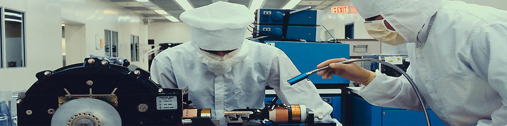
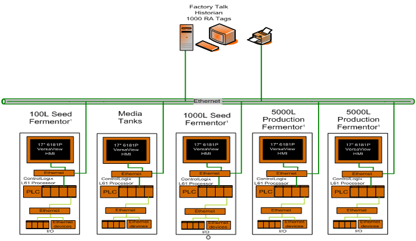
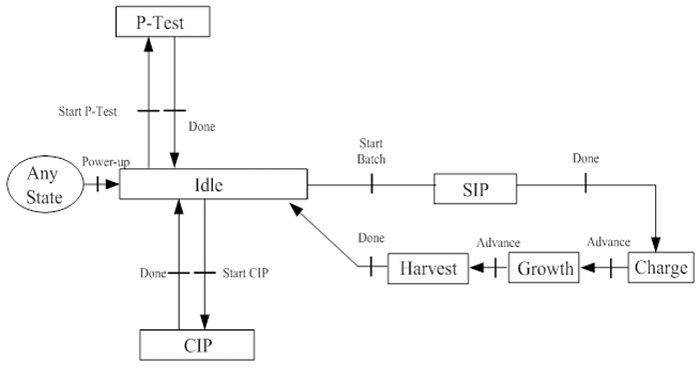
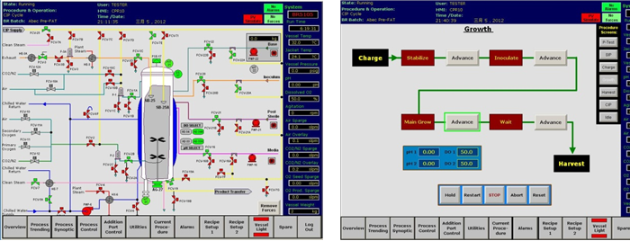

your present location：Technical services>>Automation Solution>>Bioreactor/Fermentor
Our service including:
- According to customer requirement, design the control system;
- Preparation of technical specifications;
- System configuration and code making;
- GAMP validation service and support;
The typical bioreactor/fermentor system configuration figure is shown as below:

The system is composed of Seed tanks, main tanks, media tanks and other assistant tanks. Each tank normally has a dedicated PLC, and communicate with other PLCs by standard interfaces like Ethernet. There will also have a dedicated data sever which is used to collect the data from each PLC, and create customed reports like batch report. The normal procedure of each fermentor includes:
1.P-Test
2.CIP
3.SIP
4.Charge
5.Growth
6.Harvest
The procedure transition is shown as below:

There is a typical sample of HMI configuration which using Rockwell RSview32.
